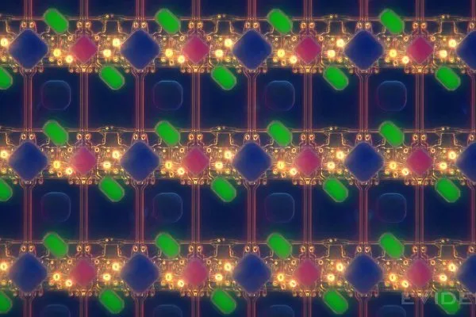

Control the distortion.
Place a camera behind an active display and the light is changed before it reaches the sensor. Diffraction and the display’s structure become part of the imaging system.
The architectural response is to design those effects and the restoration together. The physical stack hands computation a problem it has been designed to address.
The display, camera and restoration pipeline are designed together.
Conceptual illustration. Not to scale; the waveform is illustrative, not measured image data.
The photographic standard.
A mathematically recovered image, however, is not the same as a beautiful photograph. The ultimate metric for this architecture was never just signal preservation — it was human perception.
Every layer of the pipeline was tuned against the rigorous standards of photographic aesthetics. We weren't just inverting a matrix; we were protecting skin tones, preserving natural micro-contrast, and maintaining the emotional resonance of the image. The technology solves the physics, but the architecture serves the art.
Continue this perspectiveLook closer.
The iFixit teardown provides a public, microscopic view of the under-display infrared sensing region in the iPhone 18 Pro and Pro Max. It is a different implementation from the hidden inner FaceTime camera on iPhone Duo.



Built through disciplines.
Signal processing, graphics, robotics and computational cameras are the layers of training I brought to this problem. The photographic practice runs through them, keeping human perception close to the engineering decisions.
The person and the path